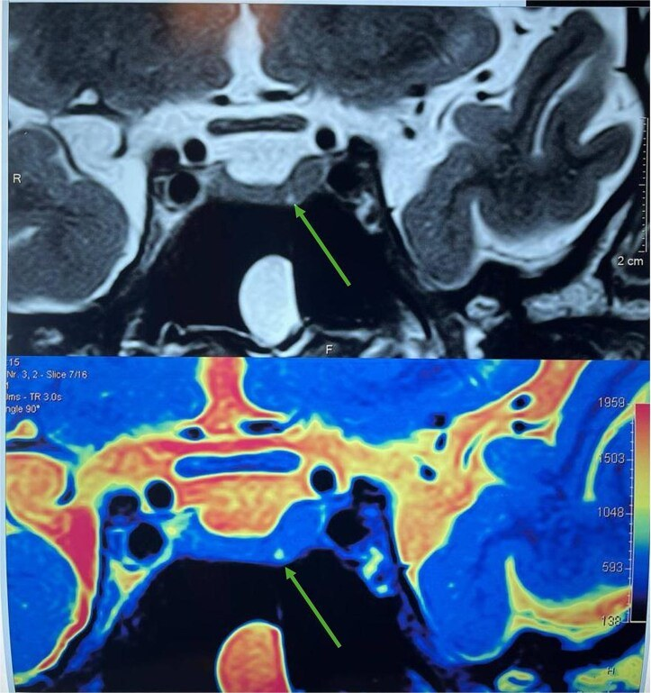
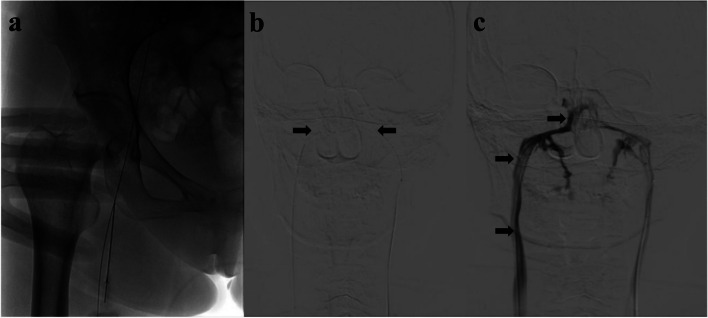

1696 — Bệnh Cushing do u tuyến yên: MRI 3T động học, BIPSS, tiêu chuẩn lui bệnh và hội chứng Nelson / Cushing disease
Tags: pattern:microadenoma-tuyen-yen pattern:cushing pattern:khong-khoi vung:tuyen-yen vung:ho-yen protocol:MRI-3T-dong-hoc protocol:BIPSS score:IPS-P-gradient
Mức chắc chắn (certainty): tổng hợp y văn (literature synthesis) — hướng dẫn đồng thuận về lấy máu xoang đá dưới (Siddiq F và cộng sự, Stroke Vasc Interv Neurol 2026, PMC13138407) + so sánh BIPSS với MRI (Mao JN và cộng sự, BMC Endocr Disord 2023, PMC9933337) + nghiên cứu tiến cứu PET/MRI (Flaus A và cộng sự, J Nucl Med 2025, PMC12487729) + 2 ca nguyên văn có ảnh (u 1,2 mm, Qasim BA và cộng sự, Oxford Med Case Reports 2026, PMC13403550; BIPSS, PMC9933337).
Câu chốt: Bệnh Cushing do tuyến yên là nguyên nhân thường gặp nhất của Cushing nội sinh, nhưng u chỉ trung bình 5 mm và hơn 90% là microadenoma — nên MRI âm tính không loại trừ bệnh, và ≥ 30% ca MRI không kết luận được. Hai ngưỡng phải thuộc: u < 6 mm → chỉ định BIPSS (vì MRI ở cỡ này không đủ đặc hiệu), và tỉ lệ ACTH xoang đá/xoang đá : ngoại vi ≥ 2 trước, ≥ 3 sau kích thích. Sai ở bước định vị = mổ nhầm bên hoặc cắt tuyến yên bình thường.
1. Tổng quan bệnh học – cơ chế hình ảnh
- Vị trí trong phổ Cushing: Cushing do u tuyến yên (Cushing disease — CD) là nguyên nhân thường gặp nhất của Cushing nội sinh; u bài tiết ACTH → ACTH cao → tăng sản thượng thận hai bên (đối chiếu bài 1694: thể ngoại sinh có thượng thận teo).
- Kích thước là vấn đề: > 90% u corticotroph là microadenoma (< 10 mm), đường kính trung bình 5 mm; u < 5 mm thường không thấy trên MRI 1,5T nhưng thấy trên 3T (2 ca nhi trong PMC6868556); ca cực đoan đã báo cáo: u 1,2 mm gây Cushing nặng (PMC13403550).
- TẠI SAO MRI hay âm tính (cơ chế vật lý): adenoma corticotroph nhỏ, đẳng–giảm tín hiệu T1, mô tuyến yên bình thường ngấm thuốc sớm và mạnh hơn u → trên chuỗi động học sau tiêm u hiện giảm tín hiệu so với nhu mô lành ở thì sớm, rồi đẳng tín hiệu ở thì muộn. Vì vậy MRI động học tăng độ nhạy chẩn đoán 50–60% so với MRI không động học (PMC9933337), nhưng vẫn không kết luận được tới 30% ca và độ nhạy cho u corticotroph chỉ ~70% (PMC12487729).
- Vì sao cần BIPSS: khi MRI âm tính, không kết luận, hoặc u < 6 mm, phải chứng minh nguồn ACTH là trung ương và bên nào bằng lấy máu xoang đá dưới hai bên (BIPSS). Với adenoma ≥ 6 mm, độ đặc hiệu của MRI đủ cao (~96%) nên một số trung tâm bỏ qua BIPSS (PMC13138407).
- Vì sao phải theo dõi sau mổ: lui bệnh sớm 72% toàn loạt và 84% ở nhóm có u chứng minh bằng mô bệnh (105 ca, PMC8684536); lui bệnh phẫu thuật nói chung 65–85%; tái phát ~25% trong 10 năm (PMC13392468 dẫn nguồn). Sau cắt thượng thận hai bên, 30% (9/30) tiến triển u tuyến yên — hội chứng Nelson, trung vị 60 tháng (PMC12474698).
2. Mẫu hình + chẩn đoán phân biệt theo vị trí (Gamut)
- ACTH phụ thuộc (ACTH cao/không bị ức chế): bệnh Cushing do u tuyến yên (phổ biến nhất); ACTH lạc chỗ (ung thư phổi tế bào nhỏ, carcinoid phế quản, ung thư giáp thể tủy, NET tụy, pheochromocytoma); CRH lạc chỗ (rất hiếm); macroadenoma tuyến yên.
- Theo kích thước u trên MRI: < 6 mm → giá trị định vị thấp, chỉ định BIPSS; 6–10 mm → microadenoma, MRI có giá trị; ≥ 10 mm → macroadenoma, đánh giá xâm lấn xoang hang, chèn ép giao thoa thị.
- Khối hố yên KHÔNG phải adenoma: nang Rathke, nang pars intermedia, craniopharyngioma, u màng não, phình động mạch (flow void, canxi hóa viền), di căn, viêm tuyến yên, tăng sản tuyến yên (suy giáp nguyên phát, CRH lạc chỗ).
- Cushing không phụ thuộc ACTH: adenoma/ACC thượng thận, PPNAD/AIMAH, Cushing ngoại sinh (bài 1694) — ACTH thấp, thượng thận một khối hoặc teo hai bên.
- Gợi nhớ "MICRO": MRI 3T động học trước, IPSS khi MRI âm hoặc u < 6 mm, Cortisol tự do nước tiểu/nửa đêm để xác nhận, Repeat MRI + theo dõi Nelson sau khi cắt thượng thận, Operation (TSS) là điều trị đầu tay.
3. Bảng so sánh phân biệt (ma trận đối chiếu)
| Thực thể (entity) | Hình ảnh điển hình | Chốt vào (rule-in) | Chốt loại (rule-out) | Gợi ý xác nhận |
|---|---|---|---|---|
| Bệnh Cushing (u tuyến yên) | U < 10 mm, giảm tín hiệu thì động học sớm, tăng sản thượng thận hai bên đều | ACTH cao + MRI thấy u + tỉ lệ xoang đá ≥ 2/≥ 3 + tăng sản hai bên | MRI âm không loại trừ; BIPSS âm mới loại trừ mạnh | MRI 3T động học, BIPSS, mô bệnh sau TSS |
| ACTH lạc chỗ | Không u tuyến yên; u phổi/tụy/tuyến ức; tăng sản thượng thận rất mạnh; hạ K | ACTH rất cao + hạ K + ổ u ngoài sọ + BIPSS không có gradient trung ương | Có gradient trung ương rõ → loại trừ | CT ngực–bụng, BIPSS, xét nghiệm NET |
| Giả Cushing (pseudo-Cushing) | Không u; MRI bình thường; thượng thận bình thường | Bối cảnh nghiện rượu/trầm cảm/béo + test Dex-CRH âm | Cortisol nửa đêm không ức chế + u rõ → loại trừ | Dex-CRH, cortisol nửa đêm lặp |
| U tuyến yên KHÔNG chức năng (tình cờ) | Khối hố yên bất kỳ, có ở ~10% dân số; không tăng sản thượng thận | Tình cờ trên MRI + ACTH/cortisol bình thường + thượng thận bình thường | Tăng sản thượng thận hai bên + ACTH cao → loại trừ | Xét nghiệm trục HPA, theo dõi MRI |
| Tăng sản tuyến yên | Tuyến yên to đều, không ổ khuyết; kèm bệnh nền | Suy giáp nguyên phát/CRH lạc chỗ + không ổ khuyết trên động học | Ổ khuyết rõ thì động học → loại trừ | TSH/FT4, điều trị bệnh nền rồi chụp lại |
| Hội chứng Nelson | Sau cắt thượng thận hai bên: u tuyến yên to ra, xâm lấn xoang hang; da sẫm màu | ACTH tăng dần + u to ra sau BADX + sắc tố da tăng | U không đổi sau nhiều năm → theo dõi | MRI định kỳ, ACTH, đánh giá thị trường |

MRI tuyến yên 3T: ổ giảm tín hiệu 1,2 mm ở bên trái tuyến yên (mũi tên) — microadenoma nhỏ bất thường. Nguồn: Qasim BA và cộng sự, Oxford Medical Case Reports 2026, PMCID PMC13403550, CC BY-NC 4.0.4. Protocol chụp + hệ phân độ/điểm chuẩn hóa
4.1. MRI tuyến yên (làm đúng thì mới thấy u)
- 3T, lát mỏng ≤ 1,5 mm (u 1,2 mm cần lát mỏng dưới mm + 3T), trường nhỏ FOV 16–20 cm, ma trận cao.
- Chuỗi bắt buộc: T1W trước tiêm sagittal + coronal; T1W sau tiêm động học coronal (nhiều thì, bắt đầu ngay sau tiêm, cách nhau 15–30 giây trong 60–90 giây đầu); T2W coronal; thì muộn sagittal/coronal.
- Đọc: tìm ổ giảm tín hiệu ở thì sớm, lệch đường giữa tuyến, vồng bờ trên, lệch cuống tuyến yên (không đặc hiệu); ghi kích thước 3 chiều tính bằng mm và vị trí theo bên + phần (trước/sau, trong/ngoài).
- Không dùng MRI để "loại trừ": MRI âm/không kết luận tới 30%, độ nhạy ~70% cho u corticotroph (PMC12487729).
4.2. BIPSS — ngưỡng và kỹ thuật
- Chỉ định: MRI âm tính, không kết luận, hoặc u < 6 mm; nghi ACTH lạc chỗ cần phân biệt; một số trung tâm vẫn làm khi u nhỏ dù MRI dương.
- Ngưỡng chốt (ACTH xoang đá : ngoại vi — IPS:P): ≥ 2 trước kích thích, ≥ 3 sau kích thích (CRH ưu tiên; desmopressin là thay thế có bằng chứng).
- Kiểm tra đặt catheter: tỉ lệ prolactin IPS:P ≥ 1,8 (cùng bên gradient ACTH mạnh nhất); < 1,8 = đặt sai vị trí.
- Hiệu năng: độ nhạy 96–97%, độ đặc hiệu ~100% khi làm chuẩn (PMC13138407); gộp trước hiệu chỉnh PRL 90%/74%, sau hiệu chỉnh 96%/68%; trước kích thích 86%/98%, sau kích thích 97%/100%.
- Biến chứng: ~4% nhẹ (máu tụ bẹn), 0,2% (1/508) biến chứng thần kinh nặng tại NIH, 0,5% (1/184) với catheter chuyên dụng (PMC13138407).
- Định bên: BIPSS kém hơn MRI trong dự đoán bên (độ nhạy 55,6% vs 96,3%, PMC9933337) và 12% định sai bên; trong nhóm dẫn lưu tĩnh mạch chéo trội, sai tới 27% (3/11) (PMC12640372) — không mổ chỉ dựa vào BIPSS khi MRI nói bên khác.

(a) chọc tĩnh mạch đùi; (b) hai catheter trong xoang đá dưới (mũi tên đen); (c) chụp tĩnh mạch xoang đá dưới bơm thuốc cản quang. Nguồn: Mao JN và cộng sự, BMC Endocrine Disorders 2023, PMCID PMC9933337, CC BY 4.0.4.3. Tiêu chuẩn lui bệnh và theo dõi
- Lui bệnh sớm: cortisol huyết thanh < 5 µg/dL trong ngày 1–3 sau mổ (định nghĩa dùng trong loạt 105 ca); lui bệnh sớm 72% chung, 84% khi có u chứng minh mô bệnh; lui bệnh phẫu thuật 65–85% (PMC8684536).
- Lui bệnh duy trì: cần glucocorticoid thay thế ≥ 6 tháng rồi eucortisol; đánh giá lại bằng UFC 24 giờ + cortisol nửa đêm ở 3 tháng, sau đó mỗi 6–12 tháng.
- Tái phát ~25% trong 10 năm (PMC13392468 dẫn nguồn) → theo dõi lâm sàng + xét nghiệm dài hạn, không chỉ 1 năm.
- Sau cắt thượng thận hai bên (BADX): theo dõi hội chứng Nelson bằng ACTH + MRI tuyến yên định kỳ; 30% (9/30) tiến triển, trung vị 60 tháng; xạ phẫu tuyến yên trước BADX gặp nhiều hơn ở nhóm không tiến triển (52%), gợi ý có thể dự phòng (PMC12474698, cỡ mẫu nhỏ).
flowchart TD
A[Cortisol cao da xac nhan + ACTH khong bi uc che] --> B[MRI tuyen yen 3T dong hoc]
B --> C{Thay u ro va du lon?}
C -->|U tu 6 mm tro len| D[TSS chon loc]
C -->|MRI am, khong ket luan, hoac u duoi 6 mm| E[BIPSS voi CRH hoac desmopressin]
E --> F{Ti le xoang da tren ngoai vi du 2 truoc va 3 sau?}
F -->|Khong| G[Nghi ACTH lac cho: CT nguc bung + xet nghiem NET]
F -->|Co| H[TSS chon loc theo MRI + BIPSS]
D --> I{Cortisol ngay 1-3 duoi 5 ug/dL?}
H --> I
I -->|Co| J[Lui benh: theo doi UFC va cortisol nua dem]
I -->|Khong| K[Danh gia lai: mo lai, xa phau, thuoc, BADX]
K --> L[Sau BADX: theo doi Nelson bang ACTH va MRI dinh ky]
J --> M{Tai phat?}
M -->|Co| K
M -->|Khong| N[Theo doi dai han 10 nam]
5. Biến thể bình thường và cạm bẫy
- U tuyến yên không chức năng có ở ~10% dân số (PMC12487729): một "ổ khuyết" tình cờ trên MRI không chứng minh là nguồn ACTH — phải có tăng sản thượng thận hai bên + ACTH cao và/hoặc gradient BIPSS.
- MRI âm tính không loại trừ bệnh Cushing: tới 30% không kết luận, độ nhạy ~70%; không kết luận "không có bệnh" rồi bỏ theo dõi.
- BIPSS không dùng để chọn bên mổ khi MRI nói khác: độ nhạy định bên 55,6% (so với MRI 96,3%, PMC9933337); 12% định sai bên, 27% khi có dẫn lưu chéo trội (PMC12640372) — ưu tiên MRI, dùng BIPSS để xác nhận nguồn trung ương.
- BIPSS âm giả: đặt catheter sai (kiểm bằng PRL IPS:P ≥ 1,8), dẫn lưu bất thường, hoặc hội chứng Cushing chu kỳ (cortisol thay đổi theo chu kỳ → làm xét nghiệm lúc "pha thấp").
- U quá nhỏ (< 2 mm): mổ có thể không tìm thấy u; ca 1,2 mm đã chọn xạ phẫu (GKRS) đầu tay vì sợ không định vị được khi mổ — nhưng lui bệnh sau GKRS chậm 6 tháng–2 năm, tỉ lệ 28–73%, cần thuốc hỗ trợ (PMC13403550).
- Sau mổ: hội chứng cai glucocorticoid (mệt, đau khớp, buồn nôn) chồng lấp với suy thượng thận và với tái phát — dựa vào cortisol/UFC, không dựa vào triệu chứng.
- Sau BADX: da sẫm màu + ACTH tăng + u to lên = Nelson, không phải "hiệu ứng bình thường của cắt thượng thận".
- Tăng sản tuyến yên do suy giáp nguyên phát có thể giả u — điều trị bệnh nền rồi chụp lại trước khi can thiệp.
6. Tự lượng giá — Blind Quiz
Ca 1 — Nam 27 tuổi, béo trung tâm, rạn da tím rộng, huyết áp cao; cortisol/UFC tăng, ACTH không bị ức chế.
- Câu hỏi: Mô tả tổn thương? Vì sao u nhỏ vậy vẫn gây bệnh nặng? Bước tiếp theo nên làm gì và bẫy nào cần tránh?
Bấm để hiện đáp án (findings + chẩn đoán)
- Dấu hiệu: ổ giảm tín hiệu 1,2 mm ở phần trái tuyến yên trên MRI 3T (mũi tên) — microadenoma rất nhỏ; không xâm lấn xoang hang.
- Chẩn đoán: bệnh Cushing do microadenoma tuyến yên; kích thước không tương quan với mức độ nặng vì cortisol do khối u bài tiết, không do thể tích.
- Xử trí trong ca này: vì u 1,2 mm khó định vị khi mổ, nhóm tác giả chọn Gamma Knife đầu tay → lui bệnh chậm, phải dùng ketoconazole hỗ trợ; đây là lựa chọn cá biệt, không phải chuẩn (TSS vẫn là đầu tay, lui bệnh 65–85%).
- Phản biện: ca này là ngoại lệ cực đoan (1,2 mm); đừng lấy làm quy luật rằng "u nhỏ thì xạ phẫu". Với u < 6 mm và MRI không rõ, BIPSS vẫn là bước chuẩn.
- Nguồn ảnh: Qasim BA và cộng sự, Oxford Medical Case Reports 2026, PMCID PMC13403550, CC BY-NC 4.0.
Ca 2 — Bệnh nhân Cushing phụ thuộc ACTH, MRI tuyến yên âm tính. Hình dưới là gì và đọc kết quả thế nào?
- Câu hỏi: Kỹ thuật gì, catheter nằm ở đâu? Ngưỡng ACTH nào xác nhận nguồn trung ương? Nếu tỉ lệ thấp thì nghĩ gì?
Bấm để hiện đáp án (findings + chẩn đoán)
- Dấu hiệu: (a) chọc tĩnh mạch đùi theo Seldinger; (b) hai catheter đặt trong xoang đá dưới hai bên (mũi tên đen); (c) chụp tĩnh mạch xoang đá dưới trong lúc bơm cản quang — xác nhận vị trí và dẫn lưu.
- Chẩn đoán: BIPSS (bilateral inferior petrosal sinus sampling) để chứng minh nguồn ACTH trung ương khi MRI âm.
- Ngưỡng: ACTH IPS:P ≥ 2 trước kích thích, ≥ 3 sau kích thích (CRH hoặc desmopressin); kiểm tra đặt catheter bằng prolactin IPS:P ≥ 1,8.
- Nếu tỉ lệ thấp: nghĩ ACTH lạc chỗ — nhưng trước khi kết luận phải loại đặt sai catheter/dẫn lưu bất thường; và nhớ BIPSS chỉ định bên kém (55,6% trong loạt này) nên không mổ theo BIPSS khi MRI nói bên khác.
- Nguồn ảnh: Mao JN và cộng sự, BMC Endocrine Disorders 2023, PMCID PMC9933337, CC BY 4.0 (nguyên bản, giữ nhãn a–c).
Bài liên quan chéo
- 1694 – Cushing do glucocorticoid ngoại sinh: thượng thận teo hai bên và cai thuốc
- 1697 – Hội chứng tăng đông của Cushing: VTE chu phẫu
- 1699 – Bệnh Cushing ở trẻ em: chậm tăng trưởng + tăng cân, MRI 3T, BIPSS
- 1700 – Hội chứng Cushing chu kỳ: dao động cortisol và bẫy xét nghiệm âm giả
- 245 – U tuyến yên chảy máu/nhồi máu (pituitary apoplexy)
- 246 – Hội chứng Sheehan: hoại tử tuyến yên sau sinh
- 155 – Thượng thận tình cờ
- 200 – Tổng quan hệ Thần kinh
Không dùng để chẩn đoán độc lập khi chưa có người hướng dẫn.